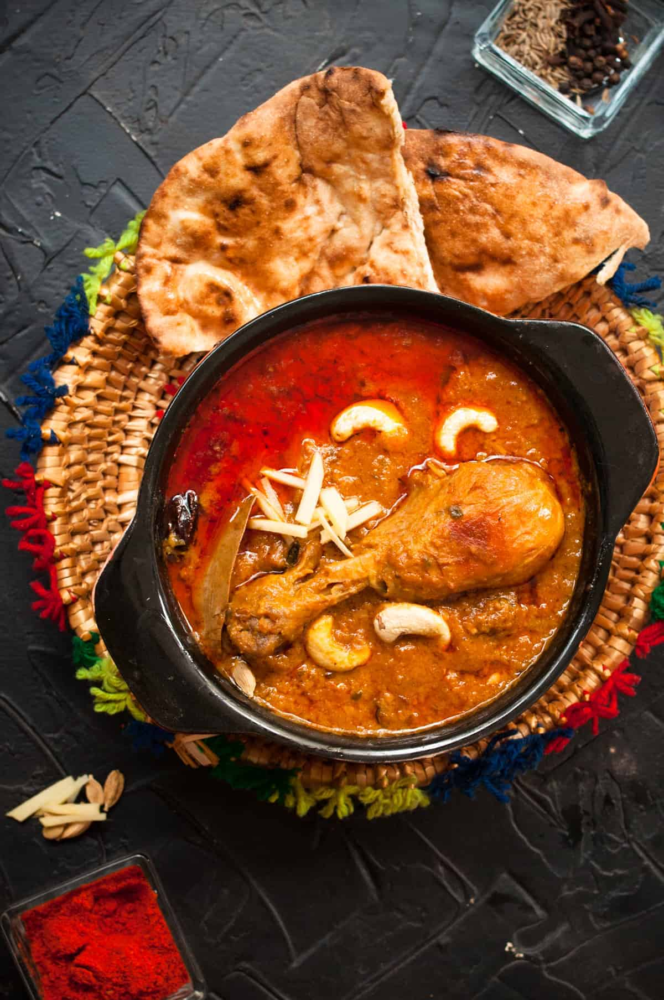

Recipe | Chicken Korma
Chicken Korma Recipe

Chicken Korma The Pakistani Pride
Korma originated in the Mughal kitchen in the 16th century where spices and nuts were profuse. This recipe shares the authentic Muglai Chicken Korma, often called Shahi Korma, (shahi means Royal). Many other recipes developed in that time like Haleem, Biryani, and Shami kabab.
Ingredients
-
Chicken
-
Onion
-
Spices
-
Ginger, garlic, chili
-
Yogurt
-
Oil
-
Kewra water
-
Cashew
How to make a Pakistani Chicken-Kormas
-
In the pot fry thinly sliced onions for 7-10 minutes until soft begins to turn golden. (Pro tip: Make sure you have enough oil to fry onions without burning. Keep your heat on medium. The onions slices on the side cook quickly so bring the onions to the center as you stir for even cooking.)
-
When you see onion slices separating in oil without clumping. Add cashew nut and let it roast. Adjust heat as needed and stir constantly towards the end.
-
Have a look at light golden evenly fried onions. Remove the onion from the oil. Try pressing the onion on the wall of the pot to squeeze as much oil as possible.
-
Transfer fried onions and cashew to a blender also add the yogurt and blend until absolutely smooth. Set aside.
-
In the oil, sizzle the whole spices for 1 minute then add garlic, chili, and ginger paste. Let it sizzle for a few seconds.
-
Add chicken and whole spices. Stir fry the chicken for 5 minutes until the color of the chicken changes and it gets a few golden marks.
-
Add the onion-yogurt paste and water to the chicken.
-
Mix well, the gravy will be peachish. Cover and cook chicken on medium heat for 15 minutes until chicken is tender and oil separates profusely.
-
Check at intervals and add little water to adjust the consistency if needed.
Home